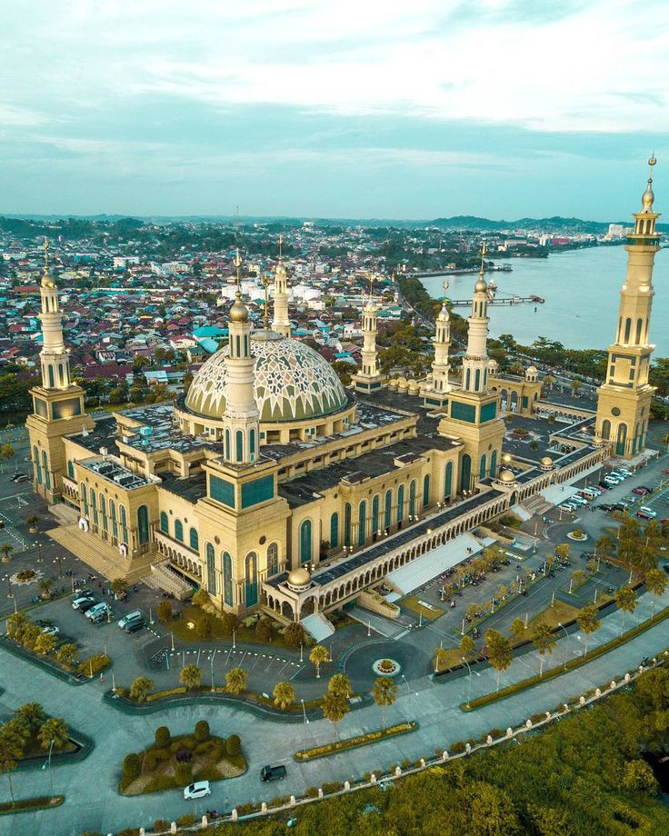
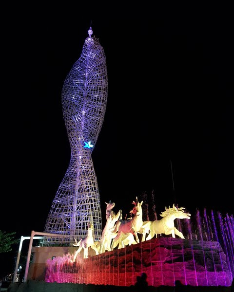
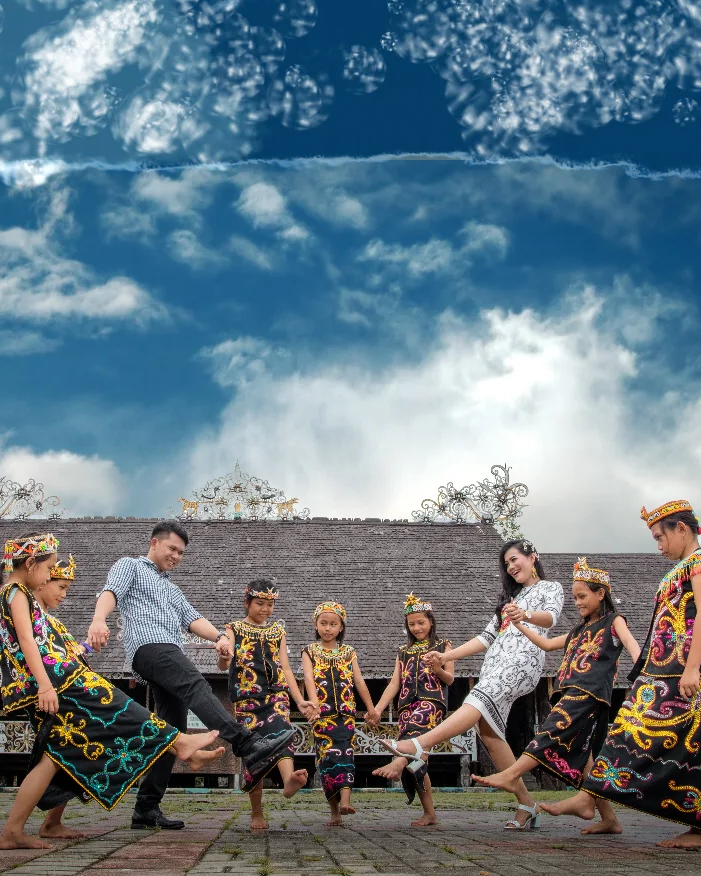
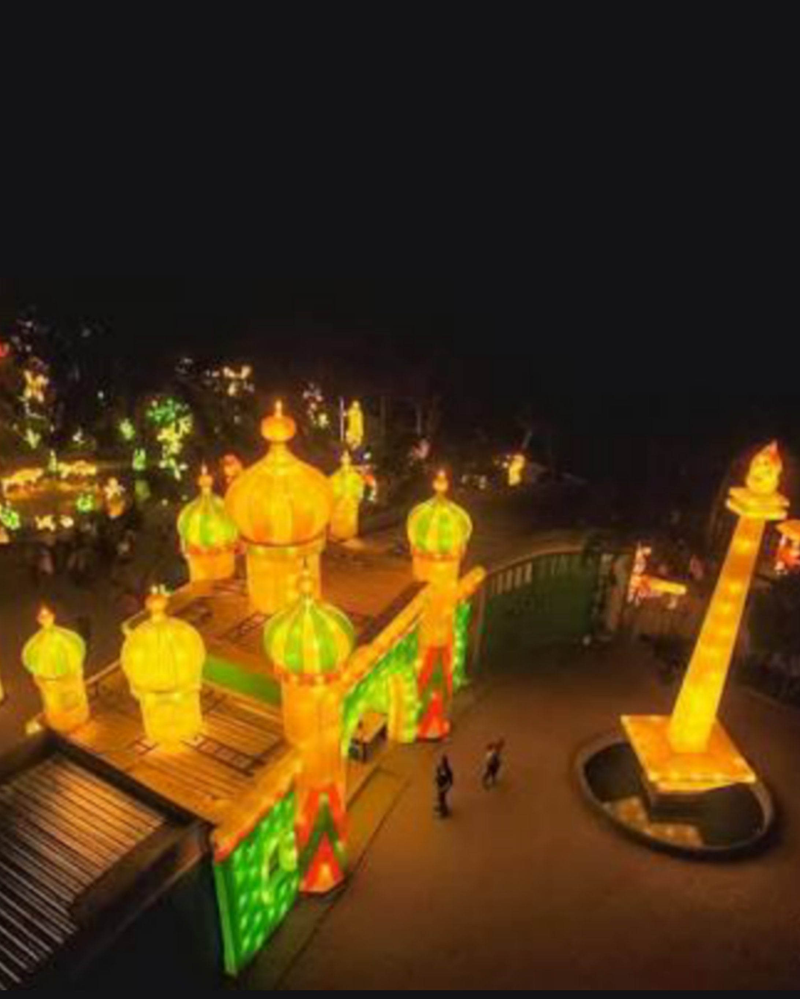

Masjid Islamic Center
Masjid Islamic Center Samarinda atau biasa disingkat MICS
adalah masjid terbesar kedua di Indonesia setelah Masjid Istiqlal,
Jakarta. Sejarah masjid ini mulai dibangun pada tanggal 5 Juli 2001
yang ditandai dengan penekanan tombol pemancangan tiang pertama oleh
Presiden RI ke-5, Megawati Soekarno Putri.
Setelah melalui proses pembangunan selama kurang lebih 7 tahun,
masjid ini akhirnya diresmikan oleh Presiden RI ke-6, Susilo Bambang
Yudoyono pada tanggal 16 juni 2008.
Read More...

Taman Samarendah
Taman Samarendah merupakan sebuah taman yang berlokasi di pusat Kota Samarinda,
Provinsi Kalimantan Timur. Taman ini diberi nama yang diambil dari penyebutan
orang-orang zaman dahulu yang menyebut Samarinda sebagai Samarendah.
Samarendah memiliki arti samar-samar tetapi indah dipandang. Taman ini tak
terlalu terlihat dari kejauhan, tetapi ketika mendekat kita bisa langsung
mengetahui keindahannya.

Wisata Budaya Pampang
Desa Pampang merupakan sebuah desa budaya yang terletak di Sungai Siring, Kota Samarinda,
Propinsi Kalimantan Timur yang merupakan objek wisata andalan dari kota Samarinda. Budaya
unggulan Desa Dayak Pampang Samarinda ini memang didominasi jenis tarian adat. Tercatat beberapa
jenis tarian yang dapat dinikmati para wisatawan tiap hari Minggu, yaitu Tari Bangen Tawai, Hudoq,
Kanjet Anyam Tali, Ajay Pilling, Kancet Lasan, Nyalama Sakai, Kancet Punan Lettu, dan masih banyak lagi.
Uniknya sebelum salah satu tarian dimulai, pembawa acara akan menjelaskan makna dari tarian yang akan digelar.
Contohnya Tarian Kanjet Anyam Tali yang menggambarkan perbedaan suku, budaya, bangsa, dan bahasa namun tetap satu.
Semua tarian yang digelar di Desa Pampang ini melibatkan seluruh masyarakat tua maupun muda.

Mahakam Lampion Garden
Mahakam Lampion Garden merupakan salah satu objek wisata di Samarinda yang menampilkan
puluhan lampu hias sebagai daya tarik utamanya. Tak hanya itu saja, terdapat pula beberapa
wahana seru yang bahkan jarang ditemukan di berbagai taman hiburan pada umumnya. MLG sangat
cocok digunakan sebagai pilihan destinasi wisata keluarga terbaik. Ketika memasuki destinasi
wisata ini, para pengunjung akan disambut gerbang besar yang sangat menarik. Hal tersebut
disebabkan gerbang masuknya berupa lampion yang berbentuk seperti sebuah bangunan masjid dengan
beberapa kubahnya. Masjid tersebut ternyata merupakan perwujudan dari Masjid Islamic Center yang
berada di tepi Sungai Mahakam, Samarinda.